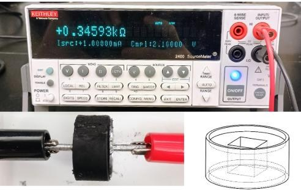
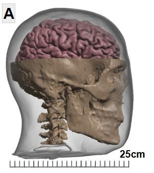

Figure 47 · dissertation↗ enlarge
Rheometry setup
Parallel-plate rheometry for measuring strain-dependent viscoelastic response.
I design and characterize biomaterials that reproduce relevant electrical and mechanical tissue properties. Conductive CNT–PDMS composites and viscoelastic PVA–Phytagel hydrogels connect polymer formulation to experimental performance.
Select an experiment to inspect the interplay between material formulation and measurable performance.
From material formulation and rheometry to MRI-based stiffness mapping. Figures 47–51 are extracted from my dissertation.
I developed PVA–Phytagel hydrogels with adjustable mechanical properties using controlled formulation and freeze–thaw processing. Rheometry provided small-sample measurements, while magnetic resonance elastography evaluated the same material system at larger, anatomically relevant scales.
The comparison revealed an important design constraint: stiffness measured in small samples did not directly predict bulk behavior. Reducing the formulation to 1.5% PVA and 0.21% Phytagel produced a measured bulk complex modulus of approximately 2.1 kPa in this study.
Parallel-plate rheometry for measuring strain-dependent viscoelastic response.
A mechanical driver excites shear waves while MRI measures motion in a bulk hydrogel.
PVA–Phytagel composition affects crystalline network formation.
Oscillatory strain sweeps reveal elastic and dissipative mechanical response.
Spatial maps compare shear-wave behavior and complex modulus across three formulations.
Follow the material studies into conductivity modeling, fabrication tooling, and anatomically informed device design.
Bulk electrical conductivity and tissue-specific sensitivity results.
Explore section
Sample holders, molds and experimental enclosures built for characterization.
Explore section
Understand where each engineered material is used in physical geometry.
Explore section